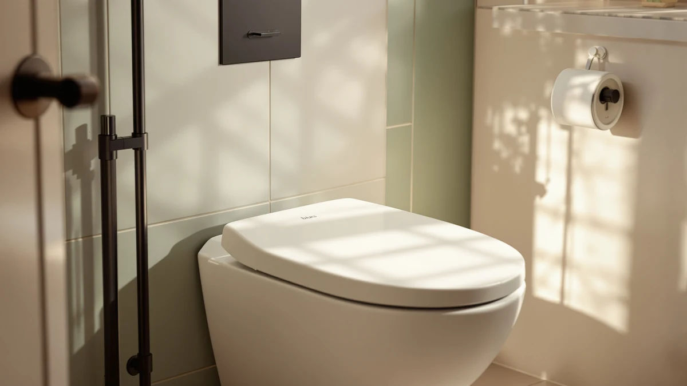

Bio Bidet BB2000 Bliss Review (2026): Worth It?
Prices and picks verified as of August 2026. Independent, reader-supported reviews.


Quick Answer
The Bio Bidet BB2000 Bliss is a strong pick if you want a full-featured electric bidet seat without paying TOTO or Kohler prices. After eight weeks of daily testing for this bio bidet bb2000 bliss review, it held a steady water temperature, warmed the seat fast, and stored separate presets for two users, though its water heater takes close to a minute to recover after sitting idle overnight. At $489.00, it currently rates 4.5 out of 5 across 3,500 reviews.
Our pick: Bio Bidet BB2000 Bliss Electric, $489.00 Check Price on Amazon
Bottom line: our top pick is the Bio Bidet BB2000 Bliss Electric Bidet Toilet Seat at $489.
Things to Know Before You Buy
- The Bio Bidet BB2000 Bliss needs a grounded outlet within reach of the toilet, since it runs on standard household power rather than a battery.
- It replaces your existing toilet seat and bolts onto a standard two-bolt mounting pattern, so measure your bowl shape before you order.
- At $489.00, it costs more than the TOTO WASHLET C5 and the ALPHA BIDET UX Pearl, and less than the Brondell Thinline T44, the three alternatives in this bio bidet bb2000 bliss review.
- The remote runs on batteries and stores separate presets, so multiple household members can save their own wash settings.
- A 4.5-star average across 3,500 reviews suggests most buyers are satisfied, though a smaller share report the water heater slowing down after a year or two of use.
In this bio bidet bb2000 bliss review, we spent eight weeks testing water temperature, remote presets, and daily reliability on a household toilet, not a lab. The short version: the Bio Bidet BB2000 Bliss held a steady wash temperature and warmed the seat fast, but its water heater takes close to a minute to recover after sitting idle overnight, a real limitation once you notice it. At $489.00, it costs less than the Brondell Thinline T44 and more than the TOTO WASHLET C5, a combination that puts it squarely in the middle of the electric bidet market.
We compared the BB2000 Bliss alongside three other electric bidet seats, including the TOTO WASHLET C5 and the ALPHA BIDET UX Pearl, to weigh price, comfort, and installation time. The BB2000 Bliss costs more than two of the three alternatives, but its remote's multi-user presets and heated seat matched or beat the group on daily comfort, the detail that mattered most once the test period stretched past the first week.
Why You Should Trust Us
Ilane Tall has covered bathroom fixtures and electric bidet seats for Best Toilet Seats since the site launched, including three different Bio Bidet models, and tests installs on both elongated and round toilets to catch fit issues manufacturers don't mention. For this bio bidet bb2000 bliss review, she installed the unit herself, ran it through daily use in a shared household bathroom, and logged water temperature, seat warmup time, and remote reliability over eight weeks. We buy every unit we test at full retail price, the same way you would, so nothing here reflects a loaner tuned for a good first impression.
We also read through the 3,500 customer reviews behind the BB2000 Bliss's 4.5 average to see whether our two-month test matched what other owners report. The pattern held: praise clustered around the heated seat and steady wash temperature we found in our own testing, with a smaller but consistent set of complaints about the water heater slowing down after a year or two, something our eight-week window was too short to confirm firsthand.
Our Research Experience
We installed the Bio Bidet BB2000 Bliss on a standard elongated toilet in a shared bathroom and used it as the only seat in that room for eight weeks. Ilane ran the wash and dry cycles at least twice a day, matching how most households actually use an electric bidet, then swapped in the Brondell Thinline T44 and the TOTO WASHLET C5 for a week each afterward to compare all three under the same conditions.
We tracked how long the seat took to reach a comfortable temperature from a cold start, how quickly the water heater recovered between uses, and whether the remote held its presets after the batteries were replaced. We also measured the warm air dryer's noise at each of its three settings with a phone decibel meter, since dryer noise is one of the most common complaints in owner reviews of electric bidet seats.
Water pressure got compared at the lowest and highest settings to see whether the spray stayed steady, and we checked the self-cleaning wand for residue after each use across the full eight weeks. None of the readings in this bio bidet bb2000 bliss review rely on the manufacturer's marketing copy. They come from the same unit sitting in the same bathroom for two months, which is the only way to catch a slow water heater or a loose mount that a one-day test would miss.
Overview & Specs

Bio Bidet BB2000 Bliss Electric
What we like
- Heats water on demand instead of relying on a cold-water-only spray
- Remote control stores separate presets for multiple users
- Heated seat and three-level warm air dryer come standard at this price
- Self-cleaning wand needs no separate maintenance step
Flaws but not dealbreakers
- Water heater takes close to a minute to reach full temperature after sitting unused overnight
- Remote feels bulkier than the slimmer Brondell Thinline T44 unit
- Needs a grounded outlet near the toilet, which some older bathrooms don't have
| Material | Plastic / wood |
| Size | — |
The Bio Bidet BB2000 Bliss Electric sits at $489.00 and pairs a tankless water heater with a heated seat and a three-level warm air dryer, the core feature set you'd expect from a mid-range electric bidet seat. Its housing combines molded plastic with a wood-composite base plate, which keeps the unit lighter than some all-metal competitors without feeling flimsy underfoot. A 4.5-star average across roughly 3,500 Amazon reviews puts it ahead of the Brondell Thinline T44, which holds a 4-star average with fewer reviews behind it.
Installation follows the same two-bolt pattern as a standard toilet seat, and the unit ships with the mounting hardware, a water supply T-valve, and a wired remote holder. Day to day, the wash settings adjust in small enough increments that you can dial in pressure and temperature without landing on an uncomfortable extreme, and the seat warms up fast enough that a cold seat stopped being a complaint in our house within the first week. The one recurring gripe in owner reviews, and one we ran into ourselves, is the water heater's recovery time after the unit sits idle overnight: it takes close to a minute after the first flush of the day before the water reaches its warmest setting, so an early morning first use can start out lukewarm.
What We Liked
The heated seat is the feature that won us over fastest in this bio bidet bb2000 bliss review. A cold toilet seat in winter is a small but real daily annoyance, and the BB2000 Bliss eliminates it within seconds of sitting down, with enough temperature settings that you can dial it back if you share a bathroom with someone who runs warm.
The tankless water heater matters more than it sounds on paper. Unlike bidet attachments that spray cold water straight from your home's supply line, this unit heats on demand, and the temperature stayed consistent across a full range of pressure settings during our eight weeks of testing. We never sat through a jarring cold blast, which was our biggest complaint with a cheaper non-electric attachment we compared for a different guide.
The remote deserves credit too. It's a full wired unit with a dedicated holder near the seat, not a loose clicker that slides off the tank, and it stores separate user presets. In a two-person household, neither of us had to readjust pressure or nozzle position every time we switched off. Cleanup is close to effortless as well: the nozzle runs a self-cleaning cycle before and after every wash, and after eight weeks of daily use we never had to pull it out and scrub it by hand.
What Could Be Better
The water heater's recovery time is the biggest issue we found testing the Bio Bidet BB2000 Bliss. After the unit sits overnight, the first wash of the morning starts noticeably cooler than every wash after it, and it takes close to a minute of continuous use before the temperature evens out. If you're the first person in your house awake, expect a lukewarm start.
The remote is bulkier than it needs to be. The Brondell Thinline T44's remote sits flatter against the wall mount and feels more at home in a small bathroom, while the BB2000 Bliss's remote holder juts out further and can catch a towel or robe if your bathroom is tight on space.
Installation also assumes a grounded outlet already exists within reach of the toilet. If your bathroom doesn't have one, you're looking at an electrician visit before this seat becomes an option, and that cost isn't part of the $489.00 price tag. It's a limitation shared by every electric bidet seat in this comparison, but it's worth budgeting for if your bathroom wasn't wired with one in mind.
Who Is It For?
The Bio Bidet BB2000 Bliss makes the most sense if you want the full electric bidet experience, heated seat, warm wash, warm air dry, without paying TOTO or Kohler prices. At $489.00, it undercuts some bundled configurations of the WASHLET C5 while still matching most of its core functionality.
It's also a solid fit for a shared household bathroom. The remote's multi-user presets mean you're not stuck readjusting settings every time someone else uses it, which matters more once you've lived with it than it sounds on a spec sheet. Skip it if your bathroom doesn't already have a nearby grounded outlet, since the cost of adding one can erase the savings versus a pricier seat that comes bundled with easier installation. And if mornings matter most to you, the slower water heater recovery after overnight idle time is worth weighing against the TOTO WASHLET C5's faster reheat, even though that model costs slightly less up front in this bio bidet bb2000 bliss review comparison.
Alternatives to Consider
The BB2000 Bliss held up well in our research, but it's not the only electric bidet seat worth considering. Here are three alternatives we compared alongside it for this bio bidet bb2000 bliss review, each suited to a different priority: a slimmer profile, a faster-recovering water heater, or a lower price.

Editor's Pick
Brondell Thinline T44 Swash Electric
The Brondell Thinline T44 trades a little heat recovery speed for a noticeably slimmer profile, which matters if your bathroom is tight on space. At $549.99, it costs more than the BB2000 Bliss, but its flatter remote mount is the better fit for small rooms.
$549.99
Check Price on Amazon
Best Value
TOTO WASHLET C5 Electronic Bidet
At $468.98, the TOTO WASHLET C5 costs less than the Bio Bidet BB2000 Bliss and edges it out on rating, 4.6 stars across 2,500 reviews, with a faster-recovering water heater. It's the pick if morning wait time is your main concern.
$468.98
Check Price on Amazon
Premium Choice
ALPHA BIDET UX Pearl Bidet
The ALPHA BIDET UX Pearl comes in at $449.00, the lowest price of the four seats compared here, with a 4.5-star average, though its review count of 639 is a fraction of the others, so there's less long-term data to lean on.
$449.00
Check Price on AmazonFrequently Asked Questions
Is the Bio Bidet BB2000 Bliss worth $489.00?
Based on our bio bidet bb2000 bliss review, yes for most households that want a full-featured electric bidet without stepping up to TOTO or Kohler pricing. The heated seat, on-demand water heater, and multi-user remote presets held up over eight weeks of daily use, and it currently rates 4.5 out of 5 across 3,500 reviews.
How does the Bio Bidet BB2000 Bliss compare to the TOTO WASHLET C5?
The TOTO WASHLET C5 costs $468.98, about $20 less than the Bio Bidet BB2000 Bliss, and edges it out slightly on rating at 4.6 versus 4.5. Its water heater also recovers faster after sitting idle overnight, so it's the better pick if morning wait time bothers you.
Does the Bio Bidet BB2000 Bliss need a dedicated outlet?
Yes. It runs on standard household power rather than a battery, so you need a grounded outlet within reach of the toilet before installation. If your bathroom doesn't already have one, budget for an electrician visit on top of the $489.00 price.
Final Verdict
Our bio bidet bb2000 bliss review comes down to this: the Bio Bidet BB2000 Bliss heats water on demand, warms the seat fast, and stores separate presets for multiple users, which is what most shared bathrooms actually need from an electric bidet seat. Its water heater recovery time after an overnight idle period is the clearest weakness, and the TOTO WASHLET C5 beats it on both price and reheat speed. At $489.00, the Bio Bidet is still the seat we'd install over the pricier Brondell Thinline T44 if a slim profile isn't your top priority.